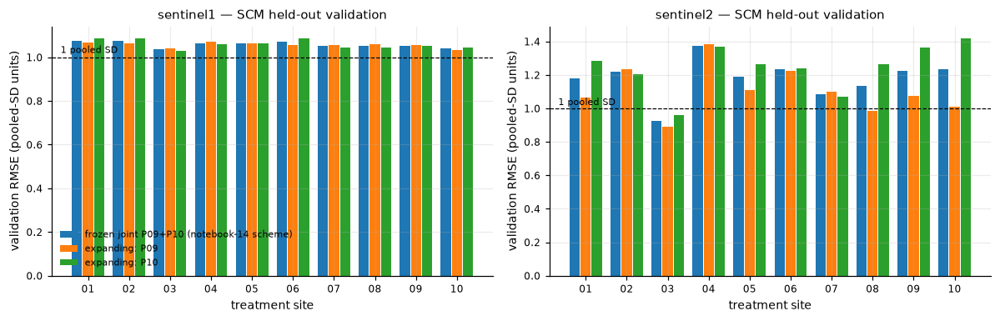
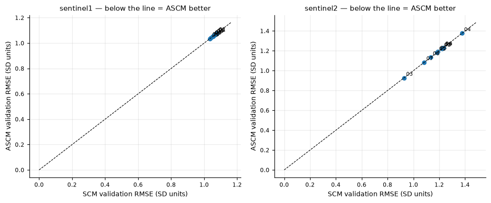
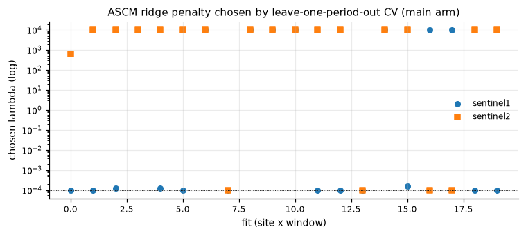
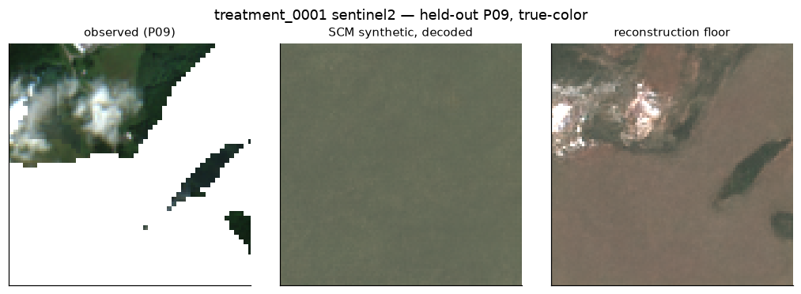
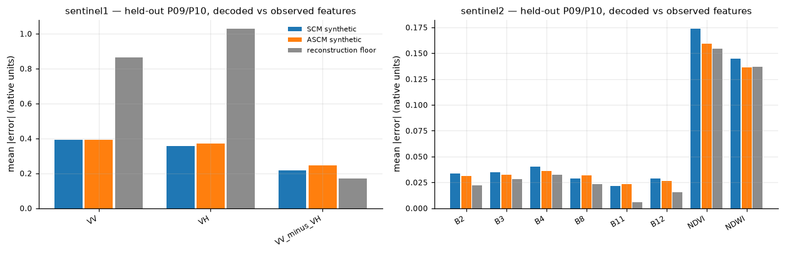
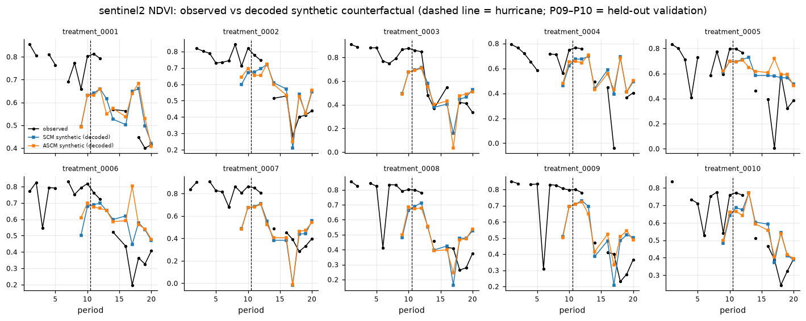

Encode → kNN donors → SCM/ASCM weights in the TerraMind tokenizer latent → decode. Scored against observed treated images at held-out pre-hurricane P09/P10.
Notebooks 01–04 in notebooks/ts_SCM_ASCM/. Outline: Docs/8-21-update.md. Companion background: Docs/synthetic_control_background_slides.html.
Two-snapshot DiD could only compare pipelines. With 10 pre-hurricane periods, P09–P10 are still untreated, so the observed treated chip is ground truth.
Every biweekly chip → TerraMind v1 quantized latent, 980-d, frozen tokenizers.
5 nearest controls per site × sensor, from every control that has panel imagery.
Simplex weights, then ridge ASCM, fit in the 980-d latent on pre-periods only.
Synthetic latent → image. Compare to the raw observed chip at P09/P10.
| Split | Fit | Score |
|---|---|---|
| Frozen joint (collaborator, notebook 14) | P01–P08 | P09+P10 pooled |
| Expanding (advisor) | P01–P08, then P01–P09 | P09, then P10 |
Sample: 10 treated × 50 controls × 2 sensors × 20 biweekly periods. Helene reference date 2024-09-27 (start of P11).
2,322 of 2,400 site–sensor–periods encoded with frozen TerraMind v1 tokenizers. Output is the quantized embedding (5, 14, 14) = 980-d, the one representation used for donor search, weight fitting, and decoding. NaN fill is the chip-mean convention. All 10 treated sites have both sensors at P09 and P10.
| Sensor | Before (P01–P10) | After (P11–P20) |
|---|---|---|
| Sentinel-1 | 588 / 600 | 559 / 600 |
| Sentinel-2 | 600 / 600 | 575 / 600 |
panel_latent_index.csv · data/embeddings_tok_panel/latents_biweekly.npz · notebook 01.
Distance = mean Euclidean distance of unscaled 980-d latents over shared P01–P08 periods. Keep the 5 nearest, per sensor. Search = every control that has a panel image (50), then the simplex sees those 5.
| Sensor | Min | Median | Max |
|---|---|---|---|
| Sentinel-1 | 12.66 | 13.09 | 13.28 |
| Sentinel-2 | 6.16 | 7.05 | 8.72 |
S1 is almost flat: “nearest” is not meaningfully nearer. That is the preview of RMSE ≈ 1.
| Sensor | Max weight (median) | Effective donors (median) |
|---|---|---|
| Sentinel-1 | 0.21 | 4.98 |
| Sentinel-2 | 0.27 | 4.74 |
Nearly uniform. The simplex has nothing to prefer.
| 01 | 02 | 03 | 04 | 05 | 06 | 07 | 08 | 09 | 10 | Mean | |
|---|---|---|---|---|---|---|---|---|---|---|---|
| S1 | 0 | 1 | 1 | 0 | 1 | 1 | 1 | 1 | 1 | 0 | 0.7 |
| S2 | 1 | 0 | 1 | 2 | 0 | 1 | 1 | 1 | 2 | 0 | 0.9 |
panel_knn_donors.csv (main arm) · panel_scm_weights.csv · README § Limitation.
Same donors, same z-scoring, both splits. RMSE is over periods × all 980 z-scored latent dimensions. The latent is standardized with the pooled 60-site, P01–P08 mean/SD, so 1.0 = 1 typical cross-site SD.
Find w₁…w₅, w ≥ 0, Σw = 1. Minimize mean squared difference vs the treated latent, jointly over 980 dims (SLSQP). A weighted average — no extrapolation.
Closed form, anchored on the SCM weights. Negative weights allowed. λ chosen by leave-one-fit-period-out CV on the fit window only.
Validation RMSE sits on the 1-SD line. Training RMSE is the same. Ratio 10/10 “good”; the level test fails almost everywhere. A 5-donor mix does not beat the site mean even in-sample.

| Site | S1 train | S1 valid | S1 level | S2 train | S2 valid | S2 level |
|---|---|---|---|---|---|---|
| 0001 | 1.082 | 1.077 | FAIL | 0.887 | 1.182 | FAIL |
| 0002 | 1.051 | 1.075 | FAIL | 0.836 | 1.221 | FAIL |
| 0003 | 1.030 | 1.035 | FAIL | 0.776 | 0.927 | pass |
| 0004 | 1.059 | 1.065 | FAIL | 1.001 | 1.376 | FAIL |
| 0005 | 1.053 | 1.064 | FAIL | 0.992 | 1.190 | FAIL |
| 0006 | 1.072 | 1.072 | FAIL | 0.915 | 1.232 | FAIL |
| 0007 | 1.051 | 1.051 | FAIL | 0.767 | 1.084 | FAIL |
| 0008 | 1.050 | 1.051 | FAIL | 0.863 | 1.134 | FAIL |
| 0009 | 1.049 | 1.054 | FAIL | 0.837 | 1.226 | FAIL |
| 0010 | 1.051 | 1.040 | FAIL | 1.015 | 1.232 | FAIL |
Only site 3 / S2 passes the level test. Expanding P09/P10 is the same picture (S1 1.03–1.09; S2 0.89–1.42).
Same validation RMSE. Points sit on the diagonal: max |SCM − ASCM| < 10−8. No negative weights on the main P01–P08 fit. 36 of 40 chosen λ sit on the CV grid boundary (13 at 10−4, 23 at 104). Ridge has nothing to leverage when the donor span is this far from the target.


Ground truth is always the raw satellite chip. Two different images are decoded. They are not interchangeable.
Weighted mix of the 5 donor latents at that period, then decode. Donors and weights enter.
Encode→decode the observed treated chip. Donors never enter. This is tokenizer error if the latent were perfect.
If synthetic ≈ floor, the bottleneck is the decoder. If synthetic ≫ floor, the bottleneck is donors/weights.


| Band | SCM | ASCM | Floor | Reading |
|---|---|---|---|---|
| S2 NDVI | 0.174 | 0.159 | 0.154 | Decoder-limited |
| S2 NDWI | 0.145 | 0.136 | 0.137 | Decoder-limited |
| S2 B11 | 0.021 | 0.024 | 0.006 | Donor-limited (~3.6× floor) |
| S1 VV chip-mean (dB) | 0.39 | 0.39 | 0.87 | Averages are easy; not spatial fidelity |
| S1 VV per-pixel RMSE (dB) | 3.22 | — | 2.43 | Imagery not usable either way |
Decoded P11–P20 means go in the vegetation-loss direction, but per-site SD exceeds |mean|. Do not treat P11–P20 as a result.

| Band | Mean effect (obs − synthetic) | SD |
|---|---|---|
| S2 NDVI | −0.037 | 0.157 |
| S2 NDWI | −0.041 | 0.144 |
| S2 B8 | −0.040 | 0.048 |
| S1 VH (dB) | +0.26 | 0.91 |
Same split, different outcome space and scaler. Compare each pipeline only to its own 1-SD line. Feature SCM validation RMSE (P09–P10, their training-SD units):
| Site | S1 | S2 | Site | S1 | S2 |
|---|---|---|---|---|---|
| 0001 | 0.44 | 0.66 | 0006 | 0.43 | 0.52 |
| 0002 | 0.54 | 0.53 | 0007 | 0.72 | 0.45 |
| 0003 | 0.12 | 0.42 | 0008 | 0.19 | 0.52 |
| 0004 | 0.14 | 1.68 | 0009 | 0.18 | 0.42 |
| 0005 | 0.19 | 1.17 | 0010 | 0.07 | 0.29 |
S1 0.18–0.42 (site 7 poor); S2 0.43–0.78 (sites 4/5 poor). Fitting weights on 11 nan-aware band means works. Fitting them on 980 spatial latent dimensions does not.
Notebook-14 numbers: Docs/report_new_panel_datasets_2026-08-19.md §4.2. VV trajectories: panel_trajectories_sentinel1_VV.png.
The panel solved the evaluation problem. This encode → weight → decode chain does not produce a useful synthetic image. The failure is the 980-d spatial latent as the weighting space — not the holdout design, and not a missing ridge correction.
P09/P10 are real ground truth. SCM and ASCM were run as specified. The reconstruction floor separates decoder error from donor error. Feature-space SCM on the same split still passes its 1-SD line.
Latent SCM: validation RMSE ≈ 1 SD, train ≈ valid. ASCM identical. Decoded synthetics are spatially unusable; S2 vegetation indices are already at the decoder floor.
Executed 2026-08-19. Notebook 05 (generation cloud-fill) is not in this deck.